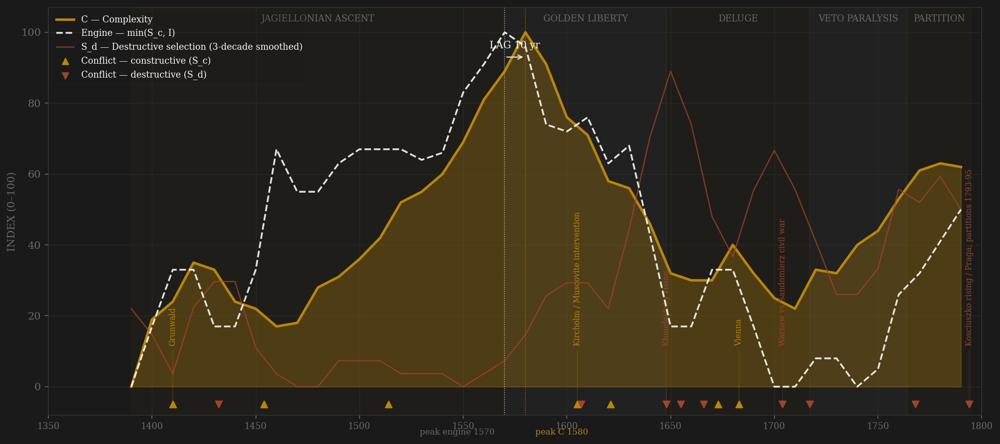
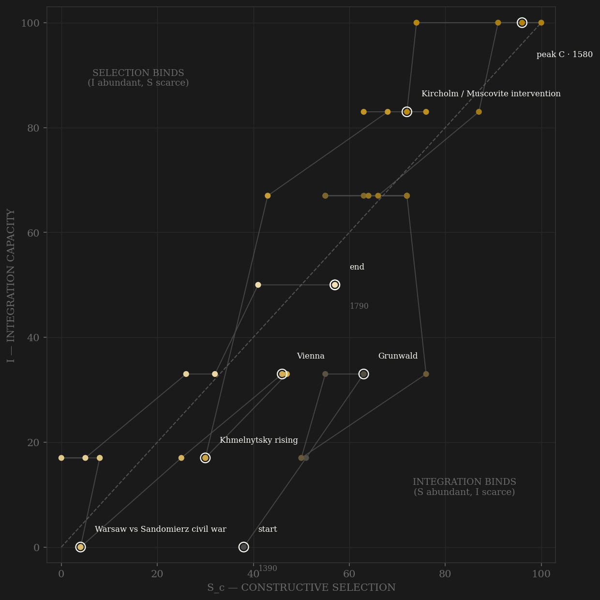

Poland-Lithuania is the roster's purest channel-C pathology case: the polity that died of its own political competition. The rise is real and rule-made — Nieszawa 1454 and the bicameral sejm 1493 build consent machinery as the price of the Teutonic wars; the execution movement of the 1550s-60s is the middle szlachta beating the magnates by statute (the Wang Anshi analogue); the Union of Lublin 1569 is negotiated hard and enacted; and the first free election of 1573, with the Henrician Articles and the Warsaw Confederation, institutionalizes the succession contest itself — five contested elections produce kings without war while France burns. The engine peaks exactly there, the 1570s, and measured complexity — Malinowski-van Zanden GDPpc at its 1580s maximum, de Vries urbanization at 4.2%, the Sound Toll grain surge — co-peaks a decade later: +10, SIMULTANEOUS, and the ○-coding halo caveat applies in full. Then the finding: the liberum veto breaks its first sejm in 1652, and from that year the C channel falls as veto use rises — within-rules contest that destroys the rules is not selection, it is entropy, and the build codes it so. Khmelnytsky 1648 (an A-channel failure — the Cossack officers refused entry to the political nation — manufacturing an S_d aimed at the coordination machinery), the Deluge, and the Muscovite overrun break the body; the veto era embalms it. By the Saxon decades the story is countable: nearly every sejm broken, one legislating assembly in a thirty-year reign, the army capped at 24,000 by statute while neighbors field three hundred thousand — channel B coded near zero not as peace but as sovereignty lapse. The Great Sejm and the 3 May 1791 Constitution abolish the veto and repair the machine within its own rules, two decades too late: the repair itself summons Targowica and the executioners.

The trajectory climbs both axes through the Jagiellonian consolidation and rides near the diagonal through the Golden Age — sejm-made selection and union-made integration rising together, the balanced climb Britain would later sustain and this polity could not. After 1652 the path does something no other polity in the sample does as cleanly: it slides DOWN the selection axis while integration decays more slowly — the contest machinery is dismantled from inside while the grain economy and the legal shell persist, so the trajectory sags left and down into the lower-left corner through the Saxon night. The 1760s-80s hook — Cadet Corps, KEN, Permanent Council, then the Great Sejm — bends the path briefly up and right, the only polity in the roster whose terminal decades point toward recovery. The partitions cut it off mid-repair: the trajectory dies not against a wall but climbing, amputated by its neighbors precisely because the repair was working.
Coded by locus and target, never by outcome. The Commonwealth ledger turns on three calls. First, the mirror: Klushino 1610 and the Polish garrison in the Kremlin are this page's channel-B apex and the Russia page's S_d core-penetration — locus is a property of the polity, not the war (Yuan/Song precedent; both pages built in the same session). Second, Khmelnytsky 1648 is INTERNAL S_d, not a foreign war: a rising of the polity's own excluded soldiery, allied to the Horde, aimed at the register, the jurisdiction, and the church — the coordination machinery. Coding it external would hide the A-channel failure that caused it. Third, the confederations: the Chicken War of 1537 disperses without blood (legal theater — C), but Zebrzydowski 1606, Lubomirski 1665 (four thousand crown troops dead at Matwy, and army reform dead with them), Tarnogrod 1715, Bar 1768, and Targowica 1792 are the same constitutional right fired as a weapon — S_d each time. The Great Northern War is the hard case: coded S_d, not B, because the Commonwealth was the battlefield and not a belligerent with agency — rival kings, rival confederations in civil war inside a foreign war, plague taking a third in places. And the partitions are terminal external S_d executed by ultimatum on a state whose own S_d had already hollowed it — the amputation of 1772 ratified by a bribed sejm in its own capital.
| YEAR | CONFLICT | CODE | CODING RATIONALE |
|---|---|---|---|
| 1410 | Grunwald | Sc | Teutonic contest at maximum — external peer war, core untouched |
| 1432 | Lithuanian civil war (Svitrigaila) | Sd | Orthodox-boyar grievance against the union's incorporation bargain — internal |
| 1454 | Thirteen Years' War | Sc | Teutonic peer war won by fiscal endurance; Nieszawa consent machinery is its price |
| 1514 | Orsha (Smolensk lost) | Sc | Muscovite frontier war — a victory that recovered nothing; the eastern peer now structural |
| 1605 | Kircholm / Muscovite intervention | Sc | Channel-B apex: Klushino 1610, garrison in the Kremlin — Russia's S_d, Poland's B (locus mirror) |
| 1607 | Zebrzydowski rokosz (Guzow) | Sd | Armed confederation against the king — beaten, amnestied; every later reform is hostage to the precedent |
| 1621 | Khotyn I | Sc | Ottoman assault held at the frontier — core untouched |
| 1648 | Khmelnytsky rising | Sd | INTERNAL by locus: the excluded Cossack soldiery against register, jurisdiction, church — the A-failure made flesh |
| 1655 | The Deluge (+ Vilnius sacked 1655) | Sd | Warsaw and Cracow taken, king in exile, first capital sack — Adrianople rule at full amplitude (separate ledger row; one arc annotation — the 1648 label carries the cluster, and the phase band is named for the Deluge) |
| 1666 | Lubomirski rokosz (Matwy) | Sd | Confederation right turned on the state — army reform dies with 4,000 crown troops |
| 1673 | Khotyn II | Sc | Sobieski's answer to Kamieniec — external contest, frontier locus |
| 1683 | Vienna | Sc | The apex B event — peak peer-contest prestige, near-nil returns to the polity itself |
| 1704 | Warsaw vs Sandomierz civil war | Sd | Great Northern War ON Polish soil: battlefield, not belligerent — two kings, plague, Deluge-scale ruin |
| 1717 | Silent Sejm | Sd | Russian troops at the chamber, no debate permitted, army capped 24k — the protectorate by statute |
| 1768 | Bar Confederation + Koliyivshchyna | Sd | Confederation-turned-civil-war, four years; Uman massacre reopens the Ukrainian wound |
| 1794 | Kosciuszko rising / Praga; partitions 1793-95 | Sd | Terminal: Suvorov storms Praga; the state erased 1795 — external S_d on a self-hollowed state |
| COMPONENT | GRADE | BASIS |
|---|---|---|
| S_c — Constructive (v2 contestability) | ○ scholar-coded | A: szlachta formal entry / university ladders / execution movement, decaying to magnate clientage, KEN-era reopening — coded 0-10 from Davies GP I, Lukowski 1991, Stone 2001 (0.40) · B: external war-years locus-cleaned — Grunwald, Muscovite wars, Khotyn, Vienna = B; Deluge, GNW excised to S_d; Saxon-era ~0 = sovereignty lapse, not peace (0.30 HARD CAP) · C: sejm/sejmiki/free-election arc, coded FALLING as veto use rises post-1652; Great Sejm late spike (0.30). Ledger: data/raw/poland_lithuania/coding_ledger_v2.csv |
| S_c v1 (frozen comparator) | ○ synthesized | Channel B alone (external-war-only), min-maxed — the prior definition's operative content |
| S_d — Destructive | ○ scholar-coded | Rokosze, Khmelnytsky, Deluge, GNW-on-core, Bar, partitions — locus-and-target rule; per-decade rationales in the ledger |
| I — Integration | ○ scholar-coded | Union coupling (Horodlo, Lublin), Vistula-Danzig artery, Crown Tribunal; magnate latifundia + serf economy as counter-integration. CODED ONLY — the page's weakest column; upgrade path: Cracow/Danzig/Lwow price-convergence panel from GPIH columns |
| C — Complexity | ◐ proxy + coded | Maddison/Malinowski-van Zanden GDPpc 1400-1795 (Crown territory, decade means) + de Vries urbanization anchors + Sound Toll passages (all-Baltic ◐ proxy — Polish grain rode those ships; post-1720 recovery is pan-Baltic, robustness: peak C 1580 with and without the strand) + coded culture arc 0.5 |
| E — Entropy | ◐ countable + coded | 0.4 broken-sejm counts per decade (approx. after Konopczynski via Lukowski ch.3-4, Davies ch.12) + 0.6 coded shocks: 1620s mint crisis, boratynki/tymf 1659-66, Frederick's counterfeit flood 1756-63, interregna, plague 1708-11, 1793 bank collapse |
| R — Renewal | ○ anchors | Population millions, scholarly anchors (Davies, Stone); Deluge loss 25-35%; partition border-basis changes flagged in R_notes |
41 decade rows 1390-1790 built straight-to-v2 by scripts/build_poland_sicre.py (channels 0.40/0.30/0.30, amendment defaults, no deviation); audit trail in components_audit.csv; Sc_v1_combat = channel B alone per the v2-build convention. Frozen-protocol lag under BOTH definitions: v2 engine 1570 -> C 1580 = +10 SIMULTANEOUS (unsmoothed +10); v1 engine 1610 -> C 1580 = -30 FAIL (unsmoothed +0) — the definitions disagree and both are shown: the v1 engine peak sits on the 1610s war decade (Smolensk, Deulino), the combat-contamination the amendment targets, while v2 dates the engine to the free-election/execution-movement apex. The ○ scholar-coded SIMULTANEOUS caveat applies in full: the same historiography feeds both the contestability and the complexity coding (Golden Age halo) — this page's verdict should carry reduced weight in pooled lag tests, and the C peak rests partly on measured strands (GDPpc 1580s max, urbanization 1600 anchor) that soften but do not remove the halo. Robustness: peak C = 1580 with and without the Sound Toll strand. B coded ~0 in the 1700s-1750s = sovereignty lapse by statute (army capped 24k, foreign armies transiting at will), not peace — the Tokugawa legislated-zero logic, opposite cause. Terminal rows right-censored honestly at 1790 (the row covers to 1795); no engine weight in the partition coda. Rebuild: ~/grove/venv/bin/python ~/vitalic.stoicism/scripts/build_poland_sicre.py, then polity_report.py --slug poland_lithuania